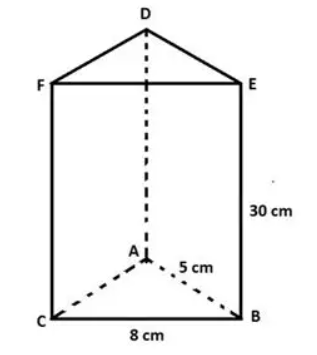

Panduan langkah demi langkah menggambar bangun ruang Prisma Segitiga ABC.DEF pada buku tulis berpetak sesuai gambar soal. Kuasai kaidah rusuk tampak (garis tebal utuh) dan rusuk tersembunyi (garis putus-putus) secara presisi dan terukur.
Saksikan pensil dan penggaris menggambar rusuk demi rusuk pada buku berpetak: dari alas, rusuk tegak, hingga tutup DEF
Menggambar rusuk alas depan BC secara horizontal dengan garis tebal nyata, lalu menarik garis miring ke belakang dengan garis putus-putus untuk rusuk AC dan AB yang tersembunyi.
Siapkan alat tulis geometri berikut sebelum mulai menggambar di buku tugas
Untuk membuat garis sketsa dan garis bantu tipis agar mudah dirapikan saat menentukan titik sudut.
Wajib digunakan agar seluruh rusuk prisma tegak lurus, sejajar vertikal, dan ukurannya terukur teliti.
Sangat dianjurkan! Garis petak membantu menjaga rusuk tegak lurus dan memudahkan kemiringan rusuk ortogonal.
Untuk menegaskan garis rusuk nyata tampak depan setelah konstruksi pensil selesai dipastikan benar.
Untuk memastikan rusuk tegak membentuk sudut 90° siku-siku terhadap garis horizontal alas BC.
Digunakan untuk memastikan panjang kaki rusuk segitiga sama kaki AB dan AC sama persis (5 cm).
Panduan menggambar mengacu persis pada spesifikasi titik dan notasi ukuran gambar ini

Prisma Segitiga ABC.DEFC (kiri depan), B (kanan depan), A (tengah belakang).F (kiri atas), E (kanan atas), D (tengah belakang atas).BC = 8 cm (dan rusuk tutup depan EF = 8 cm).AB = 5 cm dan AC = 5 cm (kaki segitiga sama kaki).AD = BE = CF = 30 cm (BE dan CF tampak nyata, AD putus-putus).h = √(5² - 4²) = 3 cm.Perhatikan keselarasan garis nyata di depan dan garis putus-putus di dinding belakang
Panduan 6 tahap terstruktur menggambar perspektif 3D prisma segitiga di buku tulismu
Karena tinggi prisma asli pada soal cukup besar yaitu 30 cm, gunakan skala pengecilan yang pas di satu halaman buku:
BC = 4 cm, rusuk kaki AB = AC = 2.5 cm, dan tinggi prisma t = 15 cm.8 cm tepat di bawahnya.5 cm di samping rusuk AB.30 cm di samping kanannya.A, B, C pada alas dan D, E, F pada tutup.AC, AB, dan AD, sedangkan 6 rusuk lainnya adalah garis tebal utuh.Hitung luas permukaan, volume, dan perkiraan ruang gambar di buku tulis
h = √(5² - 4²) = 3 cm½ × 8 × 3 = 12 cm²(2 × L_alas) + ((AB + BC + AC) × t) = 24 + 540 = 564 cm²L_alas × t = 12 × 30 = 360 cm³